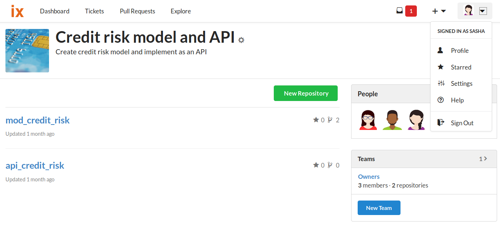
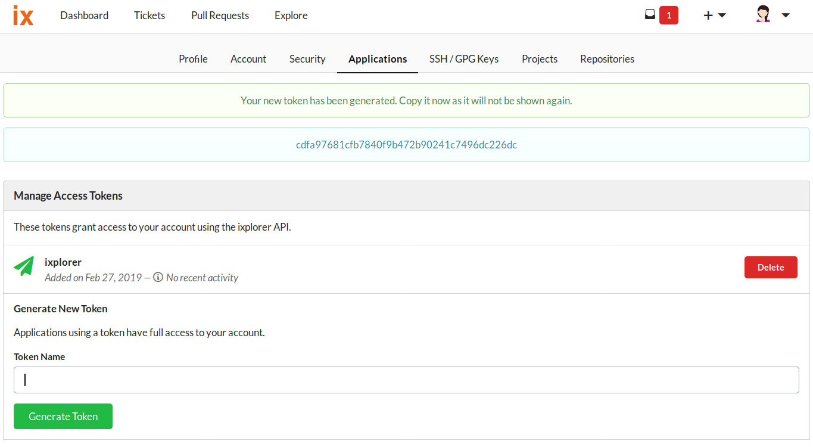
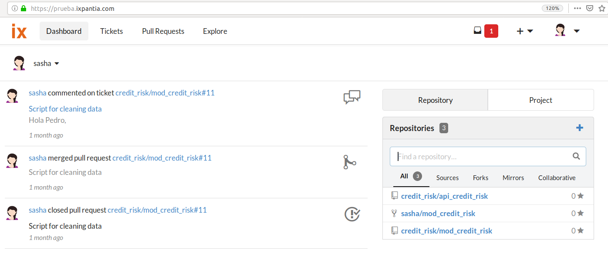
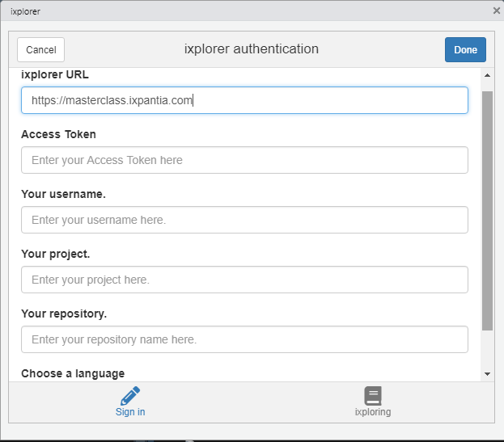

Where to get my credentials?
If you have wondered where you can get your API token or are not sure of the url, project name ‘upstream’, repository name ixplorer or the username, this vignette will help you get them.
Getting the API token
The first thing you need to do is go to the settings section which is under your account avatar.

Once there, there is a tab with the name of applications. Click on this option and then the option to generate an API token will be available. To obtain it, you have to give the API a name and then create it.

After clicking on Generate Token you will see a number made up of multiple digits. This is the API token. Be sure to write it down and save it somewhere as it is the credential you will need to put into the authentication gadget to gain access to your repository data from RStudio.

Getting my ixplorer url
This segment is simple since it is only necessary to search for your ixplorer environment on the internet and copy the url.
As an example, the url credential of the ixplorer in the image below would be:

Project name
This is the name of the project where your repositories of interest are hosted. Be careful to write the name of the upstream project as it appears in the url. For example, in the image below we can see that the name of the project is Credit risk model and API and contains two repositories.

Repository
When you start the session, you will basically be focused on a single repository. If we continue with the example, we have two repositories under Credit risk model and API: mod_credit_risk and api_credit_risk.
If we want to work on the repository mod_credit_risk we have to write this name in the authentication gadget.

User name
Here we write only the name of the user that is used to login to your ixplorer environment account. In this example we would have username sasha

How would the authetication gadget look like?
The gadget currently has 6 total slots to fill. The first time you access the gadget through the addin in Addins or the add_token() function, it is displayed only asking for the url of your ixplorer environment. In case it is detected that there are no pre-entered credentials for your environment, the following spaces will be displayed asking for your token, username, name and repository. There is also the additional option to choose your language of preference. Later the gadgets that are called will be displayed in this language. The gadget would then look like the image below

When there are previously saved credentials for your url environment you will be directed to the second tab of the gadget “ixploring” where you can select one from your previously saved environments, change your project and later your repository. This tab would look like the image below.

Once the authentication gadget closes you may be prompted yo enter a password. This password may be required for your instance the next time you use any function of ixplorer, it is recommended to store it properly in a password manager on your computer. This step is especially important for those who use a shared computer.
If your intention is not to save the credentials permanently on the computer you can always delete them once your work session is over. For this the function delete_credentials() or eliminar_credentiales() are used.